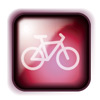

Andare in vacanza e vedere posti nuovi è sempre una bellissima esperienza.
Quando si vedono cose spettacolari o uniche, può essere anche molto emozionante.
Leggi il blog di Fabio, uno studente di scambio che è andato in gita a Monkey Mia e Kalbarri.
| Quando sei andato/a in vacanza? | Una settimana fa, durante le vacanze sono andato a Monkey Mia e Kalbarri con gli altri studenti di scambio. |
|---|---|
| Il tempo |
Siamo stati molto fortunati con il tempo. Ha fatto bel tempo ogni giorno. |
| Come sei andato/a? |
Siamo andati in pullman. Che viaggio lungo!! Abbiamo fatto più di 650 chilometri per arrivare. È stato bello però perchè abbiamo visto tanta natura spettacolare e unica. Ho trovato il viaggio stancante e ho dormito parecchio. |
| Cosa hai visto? |
Abbiamo visto i delfini a Monkey Mia. Sono così amichevoli. I delfini vengono in spiaggia e interagiscono con la gente. È una scena incredibile!!! Ci sono tantissimi turisti che vengono qui per vedere questo spettacolo meraviglioso! A Kalbarri abbiamo visto i Gorges. Sono di un colore rosso vivido. Sono veramente spettacolari! La natura nel parco nazionale è incredibilmente bella! |
| Cosa hai fatto?  |
Abbiamo fatto un mare di cose! Quasi ogni giorno ho fatto il nuoto e ho preso un po’ di sole. Le spiagge sono stupende. Ho fatto molte passeggiate lungo la spiaggia isolata. Gli altri hanno giocato a beach volley e qualcuno ha provato di fare anche il surf. Quante risate abbiamo fatto!! |
| Cosa hai mangiato/come hai trovato il cibo? |
Spesso per pranzo abbiamo mangiato un panino o un tramezzino. La sera di solito abbiamo fatto un barbecue all’aria aperta. |
| Cosa ti è piaciuto? Qual’ è stato il clou della vacanza? |
Mi è piaciuto tutto! La natura ovviamente – le spiagge con la sabbia bianca, i Gorges, il parco nazionale, la compagnia, le attivit à che abbiamo fatto. È stata una vacanza molto attiva ma allo stesso tempo anche rilassante.
Per me, però il clou è stato quando ho visto i delfini nel loro habitat naturale. Sono rimasto a bocca aperta! È stata una esperienza veramente emozionante!! È stata una vacanza bellissima. Sono molto contento che ho visto questi posti stupendi. Mi considero veramente FORTUNATO!!! |
Fabio ha fatto una esperienza meravigliosa! Ha avuto la fortuna di conoscere un mondo molto diverso del suo.
E tu? Hai visitato un posto bellissimo? Hai avuto l’opportunità di vedere cose diverse?
Write a blog entry about a holiday destination that you have been to and that you particularly enjoyed in worksheet A2.13.
Use Fabio's account of his holiday to help you with language structures.
Use the questions as a guideline for the information that should be included in your account.
Don't forget that you need to use il passato prossimo to talk about events that are in the past.
Examples of il passato prossimo used in Fabio's account have been highlighted in bold.
 |
Refer to Il Tempo to find out how to speak about the weather. |